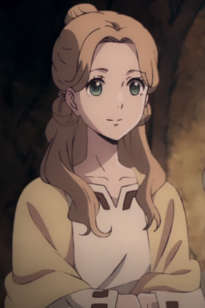

|
Kanna Temari |
|
Kanna Temari is a female side character. She loves books and she is apart of the military. |
 |
Laki Olietta |
- Fairy Tail
- Fairy Tail OVA
- Fairy Tail (2014)
- Fairy Tail: Final Season
|
Laki Olietta is a mage at the guild, Fairy Tail. She uses wood - based magic. She likes glasses and dislikes perverts. She has funny ways of expressing herself but has a sadistic side to her. |
|  |
Shinono |
- Children of the Whales
- Children of the Whales Specials
|
Shinono is one of the few Unmarked of the Mud Whale, and works as an aide to the mayor. She has a kind and caring personality. |